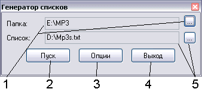
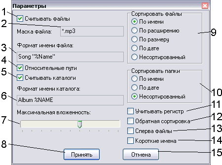

~ListGen
Описание:
Программа предназначена для создания списков файлов компьютера (аналогично
команде dir из ДОС), но позволяет задать формат вывода (что для dir невозможно).

- Cтартовый каталог, с него начнется сканирование. Кнопка справа - поиск каталога.
- Пуск - начать сканирование. Во время сканирования изменяет свое название
на Стоп. Нажатие на эту кнопку может занять некоторое время, не нажимайте на
кнопку много раз подряд, пока идет процесс
- Опции - параметры файла листинга.
- Выход из программы с сохранением параметров
- Файл - выходной файл, в него будет записан листинг
По нажатию на кнопку Опции вызывается окно опций:

- Считывать файлы - выводить в выходной файл имена файлов из сканируемого
каталога в заданном формате (см. ниже)
- Маска файлов - файлы с такой маской будут сканироваться. Правила - как в ОС.
- Строка преобразования - строка, содержащая ключи, заменяемые на соответствующие константы:
- %NAME - имя, преобразованное к верхнему регистру
- %name - имя, преобразованное к нижнему регистру
- %Name - имя без преобразования регистра
- %DIR,%dir,%Dir - аналогично, для каталогов
- %EXT,%ext,%Ext - аналогично для расширений
- %FULL,%full,%Full - аналогично для полного имени (путь\имя.расширение)
- %date - дата создания файла в стандартном формате
- %time - время создания файлов в стандартном формате
- %size,%sizeb,%sizek,%sizem - соответственно
размер файла с автовыбором единиц, в байтах, килобайтах и мегабайтах
Если необходимо вставить в строку символ %, удвойте его.
- Относительные пути - если установлена, то в качестве каталога выводится
только путь от начального каталога, иначе - полный путь (с буквой диска)
- Считывать каталоги - если установлена, будет выводить в выходной файл
имена каталогов в заданном формате (см. ниже)
- Строка преобразования - строка, содержащая ключи, заменяемые на соответствующие константы:
- %Name,%name,%Name - аналогично ключам для замены файлов: имя каталога.
- Максимальная вложенность - на сколько каталогов вглубь будет искать программа.
- Принять сделанные изменения
- Сортировка файлов - как следует сортировать выводимые файлы
- Сортировка каталогов - как следует сортировать каталоги (сортировка по дате
работает ненадежно)
- Учитывать регистр - при сортировке будет учитываться регистр имен
- Обратная сортировка - сортировка в убывающем порядке (как для файлов, так
и для каталогов)
- Сперва файлы - если установлен, сперва выводит в выходной каталог файлы из
сканируемого каталога, а потом - имя каталога, иначе - сперва каталог, потом - имена.
- Короткие имена - как в DOS, если например создается batник для старых машин...
- Выход без сохранения изменений.
Особенности:
- Все настройки сохраняются при выходе.
- Довольно медленно работает (по сравнению с dir) :-)